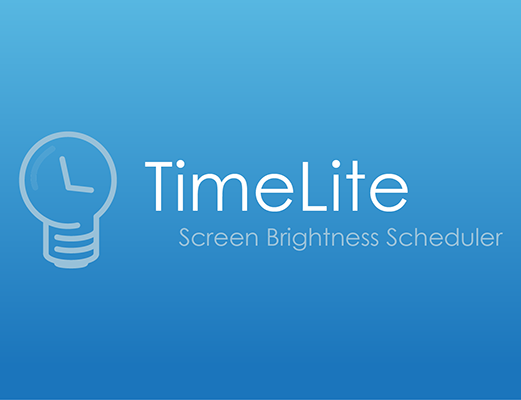

I'm Leah, a visual designer and front end web developer in Charlotte, NC.
A Little About Me
I transitioned into tech from the art world from a background in photography. I love
combining my artistic skills and problem solving skills to build dynamic websites and
applications.
I graduated from Appalachian State University in 2010 with a BFA in Studio Art Photography.
After working for a home decor manufacturing company for almost five years, I decided to
expand my skillset by completing a certificate in Full Stack Development from the University of North Carolina at Charlotte. My specialties now include HTML, CSS, JavaScript, APIs, JQuery, MySQL, MongoDB, and React. I am dedicated to constantly learning and implementing current technologies both in my design work and in my web development pursuits.
What I
enjoy most about web development is blending my skills and experience to create web
experiences that are effective, on brand and enjoyable.
When I'm not coding, you can probably find me listening to a good podcast, reading (I dig
Sci-Fi and Fantasy most), exploring nature trails up on the Blue Ridge, and hanging out with
my awesome husband and our two corgis.
My Specialities
HTML
CSS
Bootstrap
JAVASCRIPT
jQuery Node.js React.js
DATABASES
MySql MongoDB
Graphic Design
Adobe Creative Suite
Typography
Layout
Color Theory
Photography
Film
Digital
Editing
Studio Lighting
Portraits
Product
Web Design
Responsive
Modern
Dynamic
Web Development
Password
Generator
A web application built with HTML, CSS, and JavaScript. This application prompts users to
specify the criteria for their password. A random password is then generated according to
their specifications.
A weather dashboard application with search functionality to find current weather conditions
for multiple cities. Created using OpenWeather API to retrieve weather data. This
applications allows users to compare weather in different cities to appropriately plan for
travel.
A web application that allows users to schedule their work day. Utilizes jQuery and Moment JS
to dynamically update HTML, color code hours based on past, present and future times. User
input is saved to local storage so that schedule remains on page even after refreshing.
A web application that allows potential pet adopters to search for information and images
about dog and cat breeds. The goal of this app is to cut down on pet re-homing after adoption.
Powered by Materialize CSS, jQuery, The Dog API and The Cat API.
A burger logger created with MySql, Node, Express, Handlebars, an ORM, and follows the
MVC design pattern. This application is a restaurant app that lets users input the names
of burgers they'd like to eat and allows them to archive the burger name once it has been eaten.
All burgers are stored in a database.
A virtual library app that allows users to create their own account to orgainize and catalog
their books. Users can search for books and add them to lists
called "shelves". The books can then be moved between shelves or
deleted at user's discretion. Built with Google Books API, Node.js, Express.js,
Handebars.js, Bulma, MVC Design Pattern,
Passport.js, MySQL and Sequelize.
Whimsical, hand drawn illustrations were imported into Adobe Illustrator and converted into
vector images. The vectors were arranged to be used as a repeated pattern, tiled across fabric.
View
Logo
Logo for a photo booth company. Created in Adobe Illustrator. View

Logo
Android App logo created in Adobe Illustrator and Adobe Photoshop. View
Digital Collage
Original digital photography edited and collaged with other images in AdobePhotoshop. View
Digital Collage
Original digital photography digitally edited and collaged in Adobe Photoshop. View
Product Photography
Original product photography edited in Adobe Photoshop. View